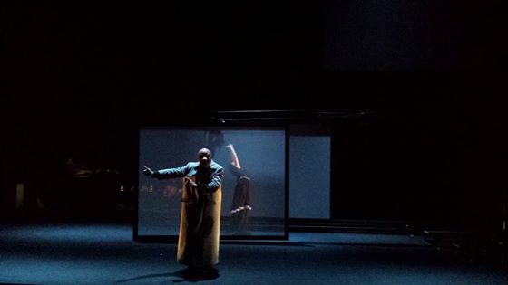
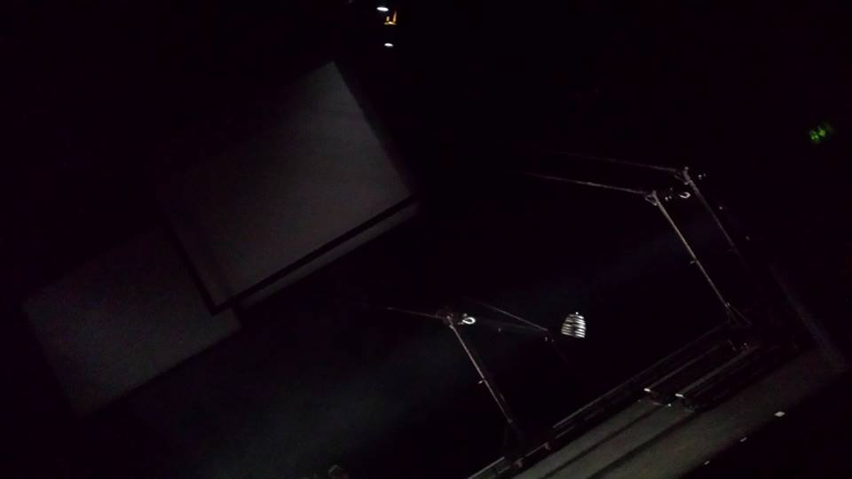
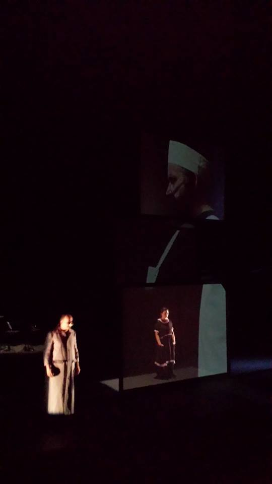

Ventrosoleil is a tale of images and sounds, inseparably united as only in children’s stories they can be. A bittersweet fable about Néla, daughter of a butcher, who wakes up one morning missing a foot. Accompanied by Ventrosoleil, a magical old cat, she embarks on a journey seeking the sea — a story of difficult inheritances and the desire for elsewhere, where dreams shape reality.
Cristian Taraborrelli designs the scenography with Sistema Balance®, his innovative and original scenic system that captures the lightning intuition of the instant that becomes image, conjugating spatial and temporal dimensions. The alternation of different space-time planes, giving body to the narrative, is expressed through movement — the very essence of the scenic apparatus.
Ventrosoleil è una favola di immagini e suoni, indissolubilmente uniti come soltanto nei racconti dei bambini possono esserlo. Una storia agrodolce su Néla, figlia di un macellaio, che una mattina si sveglia e le manca un piede. Accompagnata da Ventrosoleil, un vecchio gatto magico, intraprende un viaggio alla ricerca del mare — una storia di eredità difficili e desiderio di altrove, dove i sogni plasmano la realtà.
Cristian Taraborrelli firma la scenografia con Sistema Balance®, l’innovativa e originale scenografia con la quale sorprende e cattura l’intuizione fulminea dell’attimo che diventa immagine, coniugando la dimensione spaziale e temporale. L’alternarsi dei diversi piani spazio-temporali, che danno corpo al racconto, è espresso dal movimento — essenza stessa dell’impianto scenico.
Ventrosoleil est un conte d’images et de sons, indissociablement unis comme seuls les récits d’enfants peuvent l’être. Une fable douce-amère sur Néla, fille d’un boucher, qui se réveille un matin avec un pied en moins. Accompagnée de Ventrosoleil, un vieux chat magique, elle part en quête de la mer — une histoire d’héritages difficiles et de désir d’ailleurs, où les rêves façonnent la réalité.
Cristian Taraborrelli signe la scénographie avec Sistema Balance®, son système scénique innovant et original qui capture l’intuition fulgurante de l’instant devenant image, conjuguant dimension spatiale et temporelle. L’alternance des différents plans spatio-temporels, donnant corps au récit, s’exprime par le mouvement — essence même de l’appareil scénique.
Scenotecnica — Sistema Balance®
The scenic apparatus of Ventrosoleil is built on a dolly rail system that moves tulle screens across the stage. The screens, seemingly weightless and free of gravity, glide silently on tracks, creating overlapping layers of projection that shift and recombine in real time.
Each tulle plane captures light and video differently depending on its position, angle, and distance from the projector. When the screens overlap, the images merge into a three-dimensional landscape that breathes and dissolves, creating an illusion of depth that transforms the small theatre into infinite spaces — the sea, the night, the interior of a dream.
This is the essence of Sistema Balance®: scenography as a living, kinetic organism. Not a fixed backdrop, but a spatial instrument that modulates the perception of space and time through movement. The performer exists simultaneously in the physical space and within the projected image, their body passing through layers of light, appearing and disappearing between reality and imagination.
L’apparato scenico di Ventrosoleil è costruito su un sistema di dolly su binari che muove schermi di tulle attraverso il palcoscenico. Gli schermi, apparentemente privi di peso e gravità, scivolano silenziosamente su rotaie, creando layer sovrapposti di proiezione che si spostano e si ricombinano in tempo reale.
Ogni piano di tulle cattura la luce e il video in modo diverso a seconda della posizione, dell’angolazione e della distanza dal proiettore. Quando gli schermi si sovrappongono, le immagini si fondono in un paesaggio tridimensionale che respira e si dissolve, creando un’illusione di profondità che trasforma il piccolo teatro in spazi infiniti — il mare, la notte, l’interno di un sogno.
Questa è l’essenza del Sistema Balance®: la scenografia come organismo vivente e cinetico. Non un fondale fisso, ma uno strumento spaziale che modula la percezione dello spazio e del tempo attraverso il movimento. Il performer esiste simultaneamente nello spazio fisico e dentro l’immagine proiettata, il suo corpo attraversa strati di luce, appare e scompare tra realtà e immaginazione.
L’appareil scénique de Ventrosoleil repose sur un système de dolly sur rails qui déplace des écrans de tulle à travers la scène. Les écrans, apparemment sans poids ni gravité, glissent silencieusement sur des rails, créant des couches superposées de projection qui se déplacent et se recombinent en temps réel.
Chaque plan de tulle capture la lumière et la vidéo différemment selon sa position, son angle et sa distance du projecteur. Lorsque les écrans se superposent, les images fusionnent en un paysage tridimensionnel qui respire et se dissout, créant une illusion de profondeur qui transforme le petit théâtre en espaces infinis — la mer, la nuit, l’intérieur d’un rêve.
C’est l’essence du Sistema Balance® : la scénographie comme organisme vivant et cinétique. Non pas un décor fixe, mais un instrument spatial qui module la perception de l’espace et du temps par le mouvement. Le performer existe simultanément dans l’espace physique et à l’intérieur de l’image projetée, son corps traversant des couches de lumière, apparaissant et disparaissant entre réalité et imagination.
Foto di Scena




Video
Il Teatro — Théâtre Am Stram Gram
The Théâtre Am Stram Gram, located at 56 Route de Frontenex in Geneva, is one of the rare European theatres entirely dedicated to young audiences with a year-round professional programme. Far from being a marginal space for children’s entertainment, it is a centre international de création that commissions and produces new works at the highest artistic level — a theatre that takes young audiences as seriously as any major lyric house takes its adult public.
Its programming spans theatre, circus, music, and intergenerational performance, with theatrical workshops for children and adolescents, cultural outreach in schools, and touring productions. Under the artistic direction of Joan Mompart — the same director who staged Ventrosoleil — the theatre positions itself as a space where live art displaces perspectives and fosters dialogue between generations.
Il Théâtre Am Stram Gram, situato al 56 di Route de Frontenex a Ginevra, è uno dei rari teatri europei interamente dedicati al pubblico giovane con una programmazione professionale annuale. Lungi dall’essere uno spazio marginale per l’intrattenimento infantile, è un centro internazionale di creazione che commissiona e produce opere nuove al più alto livello artistico — un teatro che prende il pubblico giovane con la stessa serietà con cui un grande teatro lirico tratta il suo pubblico adulto.
La sua programmazione spazia dal teatro al circo, dalla musica alla performance intergenerazionale, con laboratori teatrali per bambini e adolescenti, azioni culturali nelle scuole e produzioni in tournée. Sotto la direzione artistica di Joan Mompart — lo stesso regista che ha messo in scena Ventrosoleil — il teatro si posiziona come spazio dove l’arte dal vivo sposta le prospettive e favorisce il dialogo tra generazioni.
Le Théâtre Am Stram Gram, situé au 56 Route de Frontenex à Genève, est l’un des rares théâtres européens entièrement dédiés au jeune public avec une programmation professionnelle à l’année. Loin d’être un espace marginal pour le divertissement enfantin, c’est un centre international de création qui commande et produit des œuvres nouvelles au plus haut niveau artistique — un théâtre qui prend le jeune public aussi sérieusement qu’un grand théâtre lyrique traite son public adulte.
Sa programmation couvre théâtre, cirque, musique et spectacles intergénérationnels, avec des ateliers théâtraux pour enfants et adolescents, des actions culturelles dans les écoles et des productions en tournée. Sous la direction artistique de Joan Mompart — le même metteur en scène de Ventrosoleil — le théâtre se positionne comme un espace où l’art vivant déplace les perspectives et favorise le dialogue entre générations.
Curiosità
Schermi senza gravità. Il sistema di dolly su binari permette agli schermi di tulle di muoversi come se fossero privi di peso. Scorrendo silenziosamente, creano layer di proiezione che si sovrappongono, trasformando lo spazio scenico in un universo fluido e mutevole.
Sistema Balance® — terza collaborazione. Dopo l’Opera de Quat’Sous alla Comédie de Genève, Ventrosoleil rappresenta un’ulteriore collaborazione tra Cristian Taraborrelli e Joan Mompart, entrambi legati alla scena teatrale ginevrina.
Douna Loup, scrittrice ginevrina. Nata a Ginevra nel 1982, Douna Loup è autrice di romanzi premiati. Ventrosoleil è una delle sue prime opere teatrali, una favola che esplora l’eredità difficile e il desiderio di altrove.
Un teatro unico in Europa. Am Stram Gram è una delle pochissime realtà europee dedicate esclusivamente al teatro per ragazzi con una programmazione professionale annuale, non stagionale. Un centro internazionale di creazione che produce opere nuove al massimo livello artistico.
Weightless screens. The dolly rail system allows tulle screens to move as if devoid of gravity. Gliding silently, they create overlapping projection layers that transform the scenic space into a fluid, ever-changing universe.
Sistema Balance® — continued collaboration. Following L’Opéra de Quat’Sous at the Comédie de Genève, Ventrosoleil represents a further collaboration between Cristian Taraborrelli and Joan Mompart, both deeply connected to the Geneva theatre scene.
Douna Loup, Geneva-born writer. Born in Geneva in 1982, Douna Loup is an acclaimed novelist. Ventrosoleil is one of her first theatrical works, a fable exploring difficult inheritances and the desire for elsewhere.
A theatre unique in Europe. Am Stram Gram is one of the very few European theatres entirely dedicated to young audiences with year-round professional programming. An international creation centre that commissions and produces new works at the highest artistic level.
Écrans sans gravité. Le système de dolly sur rails permet aux écrans de tulle de se déplacer comme s’ils étaient dépourvus de poids. Glissant silencieusement, ils créent des couches de projection superposées qui transforment l’espace scénique en un univers fluide et changeant.
Sistema Balance® — collaboration renouvelée. Après L’Opéra de Quat’Sous à la Comédie de Genève, Ventrosoleil représente une collaboration supplémentaire entre Cristian Taraborrelli et Joan Mompart, tous deux profondément liés à la scène théâtrale genevoise.
Douna Loup, écrivaine genevoise. Née à Genève en 1982, Douna Loup est une romancière primée. Ventrosoleil est l’une de ses premières œuvres théâtrales, une fable explorant les héritages difficiles et le désir d’ailleurs.
Un théâtre unique en Europe. Am Stram Gram est l’un des très rares théâtres européens entièrement dédiés au jeune public avec une programmation professionnelle à l’année. Un centre international de création qui commande et produit des œuvres nouvelles au plus haut niveau artistique.
Stampa e Link
Team Creativo
Tags